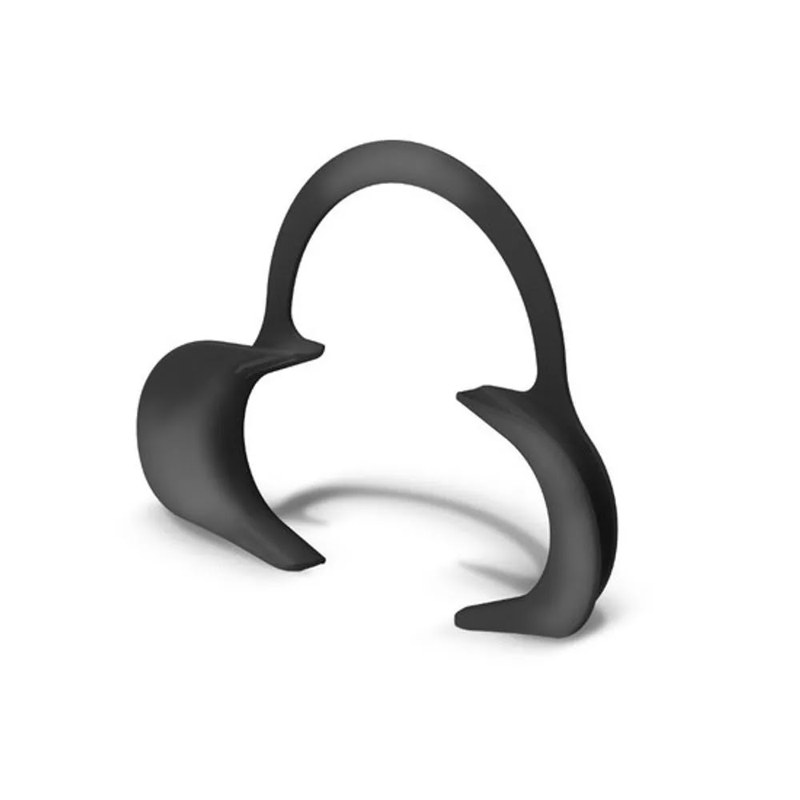

O catálogo precisa ser aberto por um endereço da internet
Você abriu o arquivo diretamente do computador. Nesse modo o navegador bloqueia a leitura da
lista de produtos por segurança, e por isso nada aparece.
Abra o catálogo pelo endereço publicado, ou peça a quem cuida do site para colocá-lo em um servidor.
Secretaria Municipal de Saúde de Florianópolis
Catálogo ilustrado de materiais odontológicos
Onde você trabalha?
Você pode trocar depois, a qualquer momento, no topo da página.
Guia de uso
Como usar este catálogo
Este catálogo é um guia visual. Ele serve para o cirurgião-dentista identificar
o material certo pela foto e conferir o código correto.
O pedido em si continua sendo feito no CELK, no sistema de pedidos da prefeitura.
Este site não envia, não registra e não substitui a solicitação no CELK.
As fotos são meramente ilustrativas. Elas mostram o tipo de material correspondente
ao código, mas a marca, o modelo, a cor e a apresentação do produto efetivamente entregue à unidade
podem ser diferentes, já que dependem do resultado de cada processo de compra. Sempre confirme o
código e a descrição do item, que são as informações que valem para o pedido.
1 Para que serve este catálogo
Para identificar visualmente o material antes de pedir, confirmar o código e a unidade de pedido
que serão usados no CELK, e conhecer o que existe disponível na rede. Muita coisa deixa de ser
solicitada simplesmente porque o profissional não sabe que existe.
2 Escolher onde você trabalha
Na primeira vez que você abre o catálogo, ele pergunta em que tipo de unidade você atende.
Isso não bloqueia nada: apenas define o que aparece primeiro na tela.
Exemplo
Rede básicaCentro de SaúdeMateriais dos grupos 12 e 13CEOCentro de EspecialidadesTodos os grupos, incluindo 14 e 15
Escolhendo Centro de Saúde, os materiais exclusivos do CEO ficam recolhidos numa
seção à parte, que você abre quando quiser. Escolhendo Centro de Especialidades,
tudo aparece de uma vez. A escolha fica guardada no aparelho e pode ser trocada a qualquer momento
pelo botão Local, no alto da página.
3 Como ler um material
Cada material aparece num cartão. Todas as partes numeradas abaixo respondem ao toque.
Exemplo
Rede básica 2

Foto de exemplo1
Odontologia 3
ABRIDOR DE BOCA EXPANDEX ADULTO 4
4150488U - Unidade5
Auxiliares de aberturaCirurgia6
Copiar código7+8
1A foto. É ilustrativa. Toque nela
para abrir a ficha completa com a imagem ampliada.
2O selo colorido sobre a foto. Diz a
que bloco o material pertence, ou seja, quem faz a solicitação dele.
3O subgrupo. É a classificação que o
próprio CELK usa para o item.
4O nome. Vem escrito exatamente como
aparece no sistema, para você reconhecê-lo na hora do pedido.
5O código e a unidade. O código é o
que se usa no CELK. A unidade avisa se o pedido é por unidade, caixa, pacote e assim por
diante — conferir isso evita pedir uma caixa quando se queria uma peça.
6As etiquetas. São clicáveis. A
primeira é a família, que reúne materiais do mesmo tipo; as seguintes são as especialidades.
Tocar numa delas filtra o catálogo por ela.
7Copiar código. Põe o número na área
de transferência do aparelho, pronto para colar no CELK.
8O botão de mais. Guarda o item na sua
lista de conferência, explicada mais adiante.
Quando um material ainda não tiver foto cadastrada, no lugar dela aparece um quadro cinza avisando
disso. O item continua funcionando normalmente, e o código segue válido.
4 Duas formas de ver a lista
No alto da página, ao lado da busca, há um par de botões que alterna entre as duas formas de
exibir os materiais. A escolha fica guardada para as próximas visitas.
Procure por este par de botões
Grade
Foto grande, um cartão por material. É a melhor opção quando você sabe qual instrumento
precisa, mas não lembra o nome exato dele.
Lista compacta
Foto pequena e uma linha por material. Cabe bem mais coisa na tela, o que ajuda quando você
vai conferir vários códigos seguidos.
5 Buscar um material
O campo de busca fica sempre visível no alto, mesmo quando você rola a página. Ele procura
ao mesmo tempo no nome, no código, na família e na especialidade.
Acentos e maiúsculas não importam. Digitar acido encontra
ÁCIDO GEL CONDICIONADOR.
Palavras soltas, em qualquer ordem. Digitar broca diamantada 1012
encontra o item mesmo que as palavras estejam separadas no nome.
O código também serve. Se você já tem o número em mãos, digite-o para
conferir de que material se trata.
Pedaços de palavra funcionam.endo traz os materiais de endodontia.
Se nada for encontrado, o catálogo mostra um aviso com um botão para limpar de uma vez a busca
e todos os filtros aplicados.
6 Filtrar
Os filtros servem para reduzir a lista antes de procurar. Eles se somam: quanto mais você marca,
mais estreito fica o resultado.
Abas de bloco
Logo abaixo da busca ficam as abas Tudo, Rede básica,
Exclusivo CEO e Interesse odontológico. Elas mostram apenas um
bloco de cada vez.
Tipo de material
Exemplo
ConsumoInstrumental
Separa o que se gasta do que se esteriliza e reutiliza.
Especialidade e família
No computador, essas duas listas ficam no quadro Filtros, à esquerda. No celular,
elas abrem num painel pelo botão Filtros, que mostra um número quando há algo
marcado.
Especialidade responde "para que serve": Endodontia, Cirurgia, Prótese e assim
por diante. Um mesmo material pode pertencer a várias.
Família responde "que objeto é este": Brocas, Limas de canal, Fórceps. Como a
lista é longa, esse grupo vem fechado e tem um campo de busca próprio.
O número ao lado de cada opção mostra quantos materiais você encontraria ao
marcá-la, já considerando os outros filtros ativos.
Fichas do que está marcado
Exemplo
Endodontia×Limas de canal×Limpar filtros
Acima da lista de materiais aparece uma ficha para cada filtro ativo. Tocar no × remove aquele
filtro sozinho, e Limpar filtros remove todos de uma vez.
7 Abrir a ficha do material
Tocar na foto ou no nome abre a ficha completa, com a imagem ampliada e todos os dados: código,
unidade de pedido, grupo, subgrupo, tipo, família e especialidades. Dentro dela também estão os
botões de copiar e de adicionar à lista, e as etiquetas continuam clicáveis.
Para fechar, use o botão Fechar no alto, toque fora da ficha, ou aperte a tecla
Esc no computador.
8 Copiar o código e usar no CELK
Este é o gesto mais repetido no uso diário, e por isso o botão é grande e fica sempre à vista.
Exemplo
Copiar código
Localize o material no catálogo.
Toque em Copiar código. O botão fica verde por um instante e a palavra
muda para Copiado, confirmando que deu certo.
Abra o CELK e cole o número no campo de busca do pedido.
A unidade de pedido mostrada aqui é a mesma do sistema. Conferi-la antes de lançar evita pedir
uma caixa quando se queria uma unidade, e vice-versa.
9 Montar uma lista antes de ir ao sistema
O botão + de cada material guarda o item numa lista de conferência. O botão
flutuante Lista, no canto inferior, mostra quantos itens você já juntou e abre o
painel.
Dentro do painel você pode:
Ajustar a quantidade de cada item com os botões de menos e mais, ou digitando
o número direto.
Remover um item pelo × ao lado dele.
Copiar lista, para colar num e-mail, no WhatsApp ou num documento.
Baixar CSV, para abrir a lista numa planilha.
Limpar lista, que apaga tudo depois de pedir confirmação.
A lista se divide sozinha em dois grupos: Para lançar no CELK e
Para solicitar ao coordenador, porque os caminhos são diferentes. Ela fica
guardada no próprio aparelho e continua lá se você fechar a página. É um rascunho de conferência:
o lançamento continua sendo feito no CELK.
10 Imprimir
O botão da impressora, no alto da página, oferece três opções:
Procure por este botão
Catálogo completo ilustrado. Todos os materiais, com foto, separados por
subgrupo, cada seção começando em página nova.
Apenas o que está na tela. Imprime só o resultado da busca e dos filtros que
você aplicou. Útil para levar ao consultório a lista de uma especialidade.
Minha lista de pedido. Imprime a lista de conferência em forma de tabela, com
as quantidades.
Antes de imprimir, o catálogo avisa quantos itens e quantas páginas serão geradas, para você não
mandar 44 páginas para a impressora sem querer.
Para as fotos saírem no papel, deixe ativada a opção
Gráficos de segundo plano ou Imagens de fundo na janela de
impressão do navegador. Para gerar um PDF em vez de imprimir, escolha Salvar como
PDF no destino.
Todas as páginas impressas trazem no alto o nome do catálogo e a data da última atualização, e os
itens do CEO e da coordenação vêm marcados ao lado do código.
11 Os botões do alto da página
LocalCentro de SaúdeLocal. Mostra onde você trabalha e troca entre Centro de Saúde e Centro
de Especialidades com um toque.
Impressora. Abre as três opções de impressão.
Lua. Passa para o modo noturno, de fundo escuro, mais confortável em
ambiente com pouca luz.
Sol. É o mesmo botão, já no modo noturno: tocando nele você volta ao modo
claro. Na primeira visita o catálogo segue a preferência do próprio aparelho.
Interrogação. Traz você de volta a este guia.
12 Os blocos do catálogo e como funciona cada um
Rede básica — grupos 12 e 13
Materiais e instrumentais da lista da Odontologia disponíveis para as unidades da rede básica.
O cirurgião-dentista lança o pedido diretamente no CELK.
Exclusivo CEO — grupos 14 e 15
Materiais que compõem a lista dos Centros de Especialidades Odontológicas. As solicitações são
feitas pelas equipes do CEO. Ficam disponíveis aqui para consulta e referência de toda a rede,
porque conhecer o que existe ajuda no encaminhamento e na conversa entre os serviços.
Interesse odontológico — lista da Enfermagem
Materiais que o cirurgião-dentista usa no dia a dia, mas que constam da lista da Enfermagem.
O caminho para obtê-los é conversar com o coordenador da unidade de saúde, que faz a requisição
pela lista dele. Por isso, nesses itens, o catálogo mostra o código para você informar ao
coordenador, e não um lançamento direto no CELK.
13 Quando a foto estiver faltando ou o material parecer errado
Se um item aparecer sem foto, com foto que não corresponde ao material, com descrição truncada ou
com unidade de pedido diferente da que está no CELK, avise para que a correção entre na próxima
atualização. Informe o código do item e o que está errado.
Responsável pelo catálogo: GT Padronização de Materiais, Insumos e Equipamentos E-mail:odontomateriaispmf@gmail.com
Quem fez este guia
Este guia foi desenvolvido por servidores da Prefeitura Municipal de Florianópolis.
Grupo de Trabalho para Padronização de Materiais, Insumos e Equipamentos
Ana Carolina Oliveira Peres
Caio César Borges de Oliveira
Ihan Vitor Cardoso
Divisão de Saúde Bucal
Valeska Maddalozzo Pivatto
Departamento de Abastecimento e Materiais
Maria Nazaré Gallotti M. Goulart
Miguel Cardoso Nora
Catálogo ilustrado de materiais odontológicosSecretaria Municipal de Saúde de Florianópolis
Carregando…
Antes de imprimir
Para as fotos saírem no papel, deixe ativada a opção
“Gráficos de segundo plano” ou “Imagens de fundo” na janela de
impressão do navegador. Para gerar um PDF, escolha “Salvar como PDF” no destino.